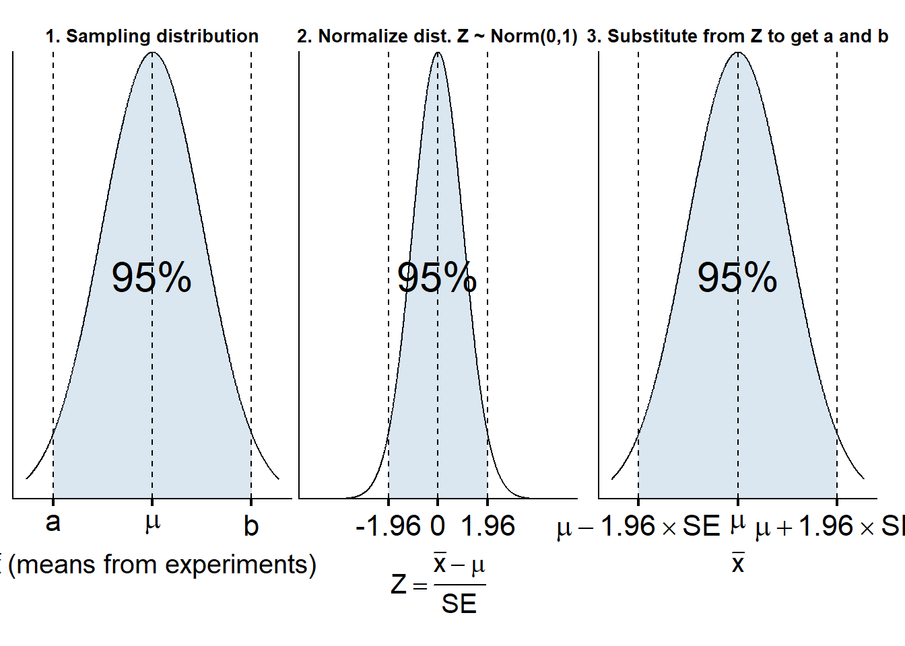

library(ggplot2)
library(tidyverse)── Attaching core tidyverse packages ──────────────────────── tidyverse 2.0.0 ──
✔ dplyr 1.1.4 ✔ readr 2.1.5
✔ forcats 1.0.0 ✔ stringr 1.5.2
✔ lubridate 1.9.4 ✔ tibble 3.3.0
✔ purrr 1.1.0 ✔ tidyr 1.3.1
── Conflicts ────────────────────────────────────────── tidyverse_conflicts() ──
✖ dplyr::filter() masks stats::filter()
✖ dplyr::lag() masks stats::lag()
ℹ Use the conflicted package (<http://conflicted.r-lib.org/>) to force all conflicts to become errorslibrary(patchwork)
area_between_norm <- function(mu, sd, alpha, minlab, meanlab, maxlab, xaxis, title){
percent <- paste0(as.character((1-alpha)*100),"%")
x <- seq(mu - 4*sd, mu + 4*sd, length.out = 1000)
df <- tibble(
x = x,
y = dnorm(x, mu, sd)
)
lower <- qnorm(alpha/2, mu, sd)
upper <- qnorm(1-(alpha/2), mu, sd)
mid_x <- (lower + upper) / 2
mid_y <- dnorm(mid_x, mu, sd) * 0.5
ggplot(df, aes(x=x, y=y)) +
geom_line() +
geom_area(
aes(y = ifelse(x > lower & x < upper, y, 0)),
alpha = 0.2,
fill="steelblue"
) +
labs(x = xaxis, title = title) +
geom_vline(xintercept = c(lower, mu, upper), linetype = "dashed") +
scale_x_continuous(limits=c(-5,5), breaks = c(lower, mu, upper), labels = c(minlab,meanlab,maxlab)) +
scale_y_continuous(expand = c(0, 0)) +
theme_classic(base_size = 10) +
theme(
plot.title = element_text(size = rel(1), face = "bold",
hjust = 0.5,margin = margin(b = rel(4))),
axis.title.y = element_blank(),
axis.text.y = element_blank(),
axis.ticks.y = element_blank(),
axis.line.x = element_line(linewidth = 0.5),
axis.ticks.x = element_line(linewidth = 0.8),
axis.ticks.length.x = unit(4, "pt"),
axis.text.x = element_text(size = rel(2), margin = margin(t = rel(4))),
axis.title.x = element_text(size = rel(1.5), face = "bold", margin = margin(t = rel(3))),
plot.margin = margin(b = rel(2), r = rel(2), l=rel(2), t=rel(2)),
panel.background = element_rect(fill = "transparent"),
plot.background = element_rect(fill = "transparent")) +
annotate(
"text",
x = mid_x,
y = mid_y,
label = percent,
size = 8
)
}
plot1 <- area_between_norm(mu=0, sd=2, alpha=0.05, minlab="a", meanlab=expression(mu), maxlab="b", xaxis=expression(bar(x) ~ "(means from experiments)"), title="1. Sampling distribution")
plot2 <- area_between_norm(mu=0, sd=1, alpha=0.05, minlab="-1.96", meanlab="0", maxlab="1.96", xaxis=expression(Z == frac(bar(x) - mu, SE)), title=paste0("2. Normalize dist. Z ~ Norm(0,1)"))
plot3 <- area_between_norm(mu=0, sd=2, alpha=0.05, minlab=expression(mu-1.96 %*% SE), meanlab=expression(mu), maxlab=expression(mu+1.96 %*% SE), xaxis=expression(bar(x)), title=paste0("3. Substitute from Z to get a and b"))
plot1+plot2+plot3+theme(plot.margin = margin(b = 10, r = 10, l=10, t=10),)Warning: Removed 376 rows containing non-finite outside the scale range
(`stat_align()`).Warning: Removed 376 rows containing missing values or values outside the scale range
(`geom_line()`).Warning: Removed 376 rows containing non-finite outside the scale range
(`stat_align()`).Warning: Removed 376 rows containing missing values or values outside the scale range
(`geom_line()`).